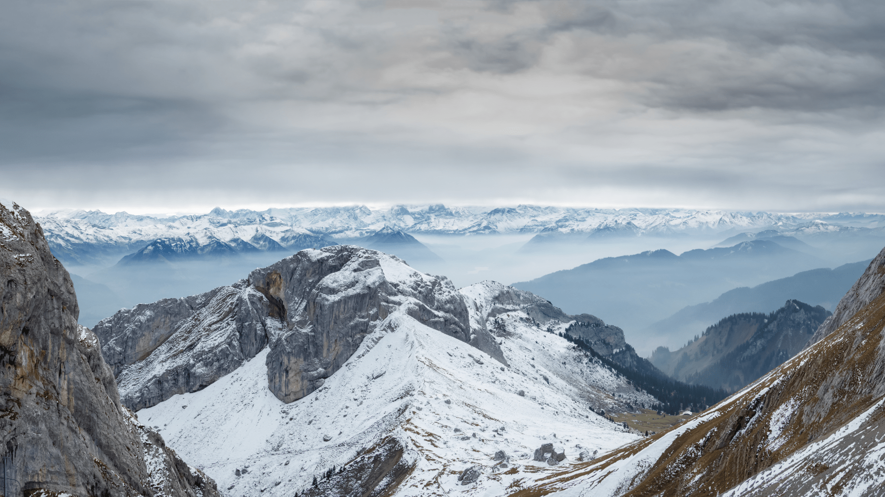

Adventure is the heartbeat of the human spirit, an exploration that transcends the boundaries of the known into the realms of the unknown. It's a journey into uncharted territories, a dance with uncertainty, and a celebration of the thrill that comes with stepping outside the comfort zone.
Adventure is the catalyst for stories, weaving narratives that unfold with each step into the unknown. It's the whisper of the wind through towering forests, the rush of adrenaline as one stands on the precipice of the undiscovered, and the echo of laughter around a campfire beneath a star-studded sky.
In the grand tapestry of human experience, adventure is the brushstroke that paints the colors of courage, resilience, and self-discovery. It is a call to break free from the mundane, to soar beyond the ordinary, and to find the extraordinary within the unexplored corners of our world and within ourselves.
Adventure biking, also known as adventure cycling or bikepacking, is a thrilling and immersive way to explore the world on two wheels. It goes beyond the conventional boundaries of road cycling, taking enthusiasts into diverse and challenging terrains, from rugged mountain trails to remote wilderness areas
Paragliding, an exhilarating adventure sport, offers participants a unique and liberating experience as they gracefully soar through the air suspended beneath a fabric wing. The sensation of freedom is unmatched as pilots harness the natural elements of wind and thermals, providing a breathtaking perspective of the landscapes below.
The equipment used includes a lightweight paraglider, a specially designed harness, a helmet, and a reserve parachute. To launch, pilots simply run downhill, allowing the paraglider to catch the wind and lift them into the sky. The flight is a harmonious dance between the pilot and the wing, with control maintained through brake lines attached to the trailing edge. Paragliding demands proper training, covering essential skills such as ground handling, take-off, landing techniques, and safety procedures.
Rafting, an exhilarating water adventure, invites enthusiasts to embark on a thrilling journey down rivers with varying currents and rapids. Participants navigate the waters in inflatable rafts, their pulses quickening with each encounter of turbulent whitewater. Essential to this experience is the collaborative effort of a team, paddling in unison to conquer the challenges posed by the river. Safety takes precedence, and participants don life jackets, helmets, and, in some cases, wetsuits for added protection against the elements.